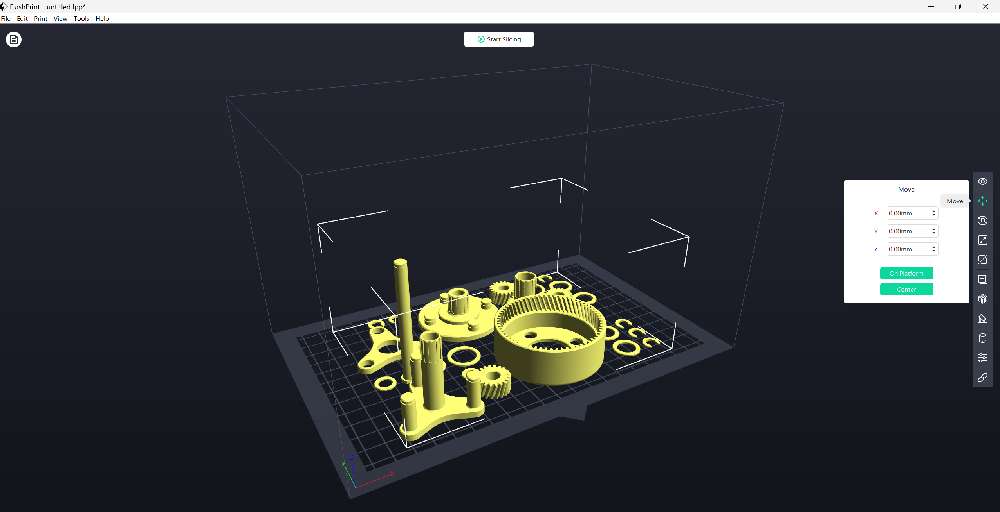

3D Printing
Introduction
What is 3d printing?
3D printing, also known as additive manufacturing, is a transformative technology that involves creating three-dimensional objects layer by layer from a digital model. This process is fundamentally different from traditional manufacturing methods, which often involve subtracting material from a larger block to achieve the desired shape.
In 3D printing, the journey from a digital design to a physical object begins with the creation of a digital model using Computer-Aided Design (CAD) software. This digital model is then sliced into thin, horizontal layers. The 3D printer then interprets each of these layers and sequentially builds the object by adding material layer upon layer until the final three-dimensional form is achieved.
The materials used in 3D printing can vary widely and include plastics, metals, ceramics, resins, and even composite materials. The choice of material depends on the specific application and the desired properties of the final object.
One of the key advantages of 3D printing is its ability to produce complex and intricate designs that would be challenging or impossible with traditional manufacturing methods. This technology allows for a high degree of customization and adaptability, making it suitable for a wide range of industries and applications.
3D printing has found applications in diverse fields such as healthcare (for creating custom implants and prosthetics), aerospace (for rapid prototyping and lightweight component production), education (as a tool for hands-on learning and prototyping), automotive (for custom parts and design iterations), and many more.
why it matters ?
1. Healthcare:
Customized Prosthetics and Implants: 3D printing enables the creation of personalized prosthetic limbs and implants tailored to individual patient anatomy.
Bioprinting: Advances in 3D bioprinting allow the creation of living tissues and organs, holding immense potential for transplantation and regenerative medicine.
Surgical Planning Models: Surgeons use 3D-printed models for preoperative planning, enhancing precision and reducing surgery time.
2. Aerospace:
Rapid Prototyping: 3D printing allows for the quick iteration of prototypes, accelerating the development of aircraft components and reducing lead times.
Lightweight Structures: Aerospace engineers utilize 3D printing to create lightweight yet robust components, contributing to fuel efficiency in aircraft.
Complex Geometries: The technology facilitates the production of complex, aerodynamic shapes that are challenging or impossible with traditional manufacturing methods.
3. Education:
Hands-On Learning: 3D printing offers a tangible and interactive way for students to engage with concepts in science, technology, engineering, and mathematics (STEM).
Prototyping for Student Projects: Students can bring their ideas to life by designing and 3D printing prototypes, fostering creativity and problem-solving skills.
Industry-Relevant Skills: Exposure to 3D printing technologies equips students with skills relevant to modern manufacturing and design practices.
4. Manufacturing:
Rapid Prototyping: Companies use 3D printing for quick and cost-effective prototyping, allowing for faster design iterations.
On-Demand Production: 3D printing facilitates small-batch and on-demand manufacturing, reducing the need for large inventories and storage space.
Tooling and Jigs: Manufacturers leverage 3D printing to produce customized tooling and jigs for improved efficiency on the production line.
5. Automotive:
Customized Parts: 3D printing enables the production of custom and low-volume automotive parts, reducing tooling costs.
Prototyping for Design Iterations: Automotive engineers use 3D printing to create prototypes for testing and refining designs.
Supply Chain Efficiency: With the ability to produce parts on-demand, 3D printing contributes to a more agile and efficient automotive supply chain.
6. Architecture:
Scale Models: Architects use 3D printing to create detailed scale models of buildings and structures for visualization and client presentations.
Prototyping: The technology allows architects to prototype and test design concepts before committing to large-scale construction.
Custom Components: 3D printing facilitates the creation of custom architectural elements and intricate designs not easily achievable through traditional methods.
how 3d printing works?
1. Digital Design Creation:
The journey of 3D printing begins with the creation of a digital model using Computer-Aided Design (CAD) software. CAD allows designers and engineers to meticulously craft a virtual representation of the intended object. This digital model serves as a comprehensive blueprint, capturing every detail and dimension of the final product. The use of CAD empowers creators to conceptualize complex geometries and intricate structures, providing a level of precision and customization unparalleled in traditional manufacturing processes.
Slicing the Model:
Once the digital model is finalized, it undergoes a process known as slicing. Slicing involves breaking down the 3D model into thin, horizontal layers using specialized software. Each layer represents a cross-section of the object. This step is crucial for the 3D printer to understand how to construct the physical object layer by layer. The thickness of these layers, known as the layer height, determines the level of detail and resolution in the final print. Smaller layer heights result in finer details but may increase printing time.
Layer-by-Layer Printing:
With the model sliced into layers, the 3D printer interprets this digital information and begins the layer-by-layer printing process. The print head, or extruder, moves along the predetermined paths, depositing or solidifying material according to the digital design. The choice of printing technology dictates the specific mechanism — it could involve melting and extruding plastic filaments (Fused Deposition Modeling or FDM), curing liquid resin with UV light (Stereolithography or SLA), or sintering powdered material with a laser (Selective Laser Sintering or SLS).
This layering process is repeated until the entire three-dimensional object is realized. The ability to add material precisely where needed, with a high degree of complexity, sets 3D printing apart from traditional manufacturing methods.
Key Components of the 3D Printing Process:
Print Bed:
The print bed is the foundation on which the object is built. It serves as the surface where the first layer adheres during printing. In many cases, the print bed is heated to ensure proper adhesion and prevent warping. A leveled and well-prepared print bed is crucial for the success of the print.
Extruder/Nozzle:
The extruder, also known as the print head, is a critical component responsible for depositing or melting the material onto the print bed layer by layer. The nozzle determines the diameter of the extruded material, influencing the resolution of the print. In FDM printers, the extruder heats and extrudes thermoplastic filaments, while in other technologies, it may involve curing liquid resin or sintering powdered material.
Material:
3D printing materials vary widely, offering versatility to suit different applications. Common materials include various plastics (PLA, ABS), metals (such as titanium or aluminum), resins, and composite materials. The choice of material depends on the specific properties required for the final object, such as strength, flexibility, or heat resistance.
3D printing technologies
1. Fused Deposition Modeling (FDM):
Process: FDM is one of the most common 3D printing technologies. It involves melting and extruding plastic filaments layer by layer through a heated nozzle.
Strengths: Simple and widely used technology. Cost-effective for rapid prototyping and producing functional parts.
Applications: Prototyping: Quick and affordable creation of prototypes.
Custom Parts: Manufacturing customized components with various thermoplastics.
2. Stereolithography (SLA):
Process: SLA uses UV light to cure liquid resin layer by layer. A build platform gradually moves upward as each layer solidifies.
Strengths: High-resolution prints with smooth surface finishes. Suitable for detailed and intricate designs.
Applications:
Jewelry Design: Crafting intricate jewelry prototypes.
Dental Models: Producing detailed dental models for prosthodontics.
3. Selective Laser Sintering (SLS):
Process: SLS involves sintering powdered material (such as nylon or metal) with a laser to fuse particles layer by layer.
Strengths: No need for support structures, as unsintered powder acts as a natural support. Wide range of materials, including polymers, metals, and ceramics.
Applications:
Functional Prototypes: Creating prototypes for testing and functional evaluation.
Aerospace Components: Manufacturing lightweight and durable aerospace components.
4. Digital Light Processing (DLP):
Process: DLP utilizes photopolymerization with a digital light projector to solidify liquid resin layer by layer.
Strengths: Fast printing speeds compared to some other technologies. High accuracy and resolution.
Applications:
Dental Models: Producing dental crowns, bridges, and other dental applications.
Prototyping: Quick prototyping of designs with intricate details.
5. Binder Jetting:
Process: Binder Jetting involves binding powdered material together with a liquid binder, layer by layer, to create a solid object.
Strengths: Fast printing speeds. Ability to print in full color.
Applications:
Full-Color Prototypes: Creating prototypes with detailed color representation.
Architectural Models: Constructing detailed architectural models.
6. Material Jetting:
Process:Material Jetting works by jetting droplets of material onto the build platform layer by layer, similar to an inkjet printer.
Strengths: High precision and accuracy. Ability to print with multiple materials simultaneously.
Applications:
Medical Models: Producing accurate anatomical models for surgical planning.
Electronics Prototyping: Creating prototypes with complex, multi-material components.
7. Multi Jet Fusion (MJF):
Process: MJF involves jetting fusing and detailing agents onto powder material, followed by a heat treatment to fuse the material.
Strengths: Fast printing speeds. Excellent mechanical properties and part strength.
Applications:
Functional Prototypes: Rapid production of functional prototypes.
Production Parts: Manufacturing end-use parts with high mechanical performance.
Materials used in 3d printing
1. Plastics
PLA (Polylactic Acid)
Properties: Biodegradable, easy to print, low warping.
Applications: Prototyping, educational models, consumer products.
ABS (Acrylonitrile Butadiene Styrene)
Properties: Strong, durable, resistant to high temperatures.
Applications: Functional prototypes, automotive components, electronic housings.
PETG (Polyethylene Terephthalate Glycol)
Properties: High strength, chemical resistance, transparency.
Applications: Mechanical parts, food containers, transparent prototypes.
2. Metals
Titanium:
Properties: High strength-to-weight ratio, corrosion-resistant.
Applications: Aerospace components, medical implants, high-performance parts.
Aluminum:
Properties: Lightweight, corrosion-resistant, good thermal conductivity.
Applications: Aerospace parts, automotive components, heat sinks.
Stainless Steel:
Properties: Strong, corrosion-resistant, versatile.
Applications: Custom tools, medical instruments, functional prototypes.
3. Resins:
Used in SLA and DLP Printing:
Properties: High detail, smooth surface finish, varying hardness.
Applications: Dental models, jewelry, intricate prototypes.
4. Composites:
Blends of Different Materials:
Properties: Tailored properties combining strength, flexibility, or other characteristics.
Applications: Aerospace components, sports equipment, specialized prototypes.
Considerations for Material Selection based on Application:
Mechanical Properties: Consider the strength, flexibility, and durability required for the specific application. For example, functional prototypes may require materials with high mechanical strength.
Temperature Resistance: Evaluate the material's ability to withstand high or low temperatures. This is crucial for applications in automotive, aerospace, or electronics.
Chemical Resistance: Consider the resistance of the material to chemicals, especially in applications where exposure to various substances is likely.
Biocompatibility: In medical applications, especially for implants or surgical models, ensure that the material is biocompatible and safe for use in contact with the human body.
Cost: Evaluate the cost-effectiveness of the material for the intended application, keeping in mind factors like material waste, printing time, and post-processing requirements.
Printability: Some materials are easier to print than others. Consider the specific requirements of your 3D printer and the ease of handling the chosen material.
Color and Aesthetics: For applications where appearance is important, consider the color options and overall aesthetics of the material.
Selecting the right material is a crucial step in the 3D printing process, as it directly influences the performance, appearance, and functionality of the final printed object. Understanding the properties and considerations associated with each material allows for informed decision-making based on the specific needs of the project.
3D printing houses
Process overview
One of the groundbreaking applications of 3D printing is the construction of full-sized houses using additive manufacturing techniques. This innovative approach to building, often referred to as "3D-printed housing" or "contour crafting," has the potential to revolutionize the construction industry.
1. Construction Process:
Layer-by-Layer Printing: Similar to other 3D printing processes, the construction of houses involves layering materials to gradually build up the structure. This is typically done by extruding a concrete or cement-like mixture layer by layer.
Robotic Systems: Large robotic arms or gantry systems are often used in 3D-printed construction. These systems move along predetermined paths, depositing material according to the digital design.
2. Materials:
Concrete Mixtures: The most common material used in 3D-printed construction is a special concrete mixture that is optimized for layer-by-layer deposition. This concrete is often reinforced with fibers to enhance strength.
Additives: Various additives, such as polymer-based admixtures, may be included in the concrete mix to improve workability, setting time, and overall printability.
3. Advantages:
Speed and Efficiency: 3D printing houses can be significantly faster than traditional construction methods. The layering process allows for quick assembly, potentially reducing construction times from months to days.
Cost-Effective: The efficiency of 3D printing can lead to cost savings in terms of labor, material waste, and overall construction expenses.
Design Flexibility: 3D printing allows for intricate and customizable designs, enabling architects to explore innovative and complex structures.
Reduced Environmental Impact: Some 3D printing processes in construction produce less waste compared to traditional construction methods, contributing to sustainability goals.
4. Applications:
Affordable Housing: 3D-printed houses have the potential to address housing shortages, particularly in areas with high demand and limited resources.
Emergency Shelter Construction: The rapid and cost-effective nature of 3D printing makes it suitable for quickly providing shelter in disaster-stricken areas.
Customization: Homeowners can have input into the design of their houses, leading to more personalized and unique living spaces.
5. Challenges:
Regulatory Approval: Regulatory frameworks and building codes may need to adapt to accommodate 3D-printed construction methods.Material Development: Continued research is underway to optimize 3D printing materials for construction, balancing strength, durability, and printability.
Scaling Up: While successful projects have been completed, scaling up 3D printing for mass housing construction poses logistical and technological challenges.
Project mile-stone, first 3d printed house in Netherlands
A consortium of the government, knowledge institutions and industry came together to develop the new technology with the dream of solving the housing shortage in the Netherlands. Eindhoven University of Technology (TU/e) conducted research and developed the BIM models to print. The concrete mortar needed for 3D printing was developed by Saint-Gobain Weber Beamix, and together with TU/e developed the printing technology. The municipality of Eindhoven co-initiated and facilitated the project. In recent years, 3D printing technology has overcome initial skepticism and demonstrated its viability, particularly in the construction industry. A significant milestone was reached on April 30, 2021, with the completion of the first 3D-printed concrete house in the Netherlands as part of the 'Milestone Project.' This single-story building, the first of five, fully complies with the country's strict construction requirements.

The house, located in Eindhoven, boasts 94 square meters of floor space, including a living room and two bedrooms, designed to mimic the shape of a large rock, integrating harmoniously with the natural surroundings. The construction showcases the design freedom offered by 3D concrete printing. Notably, the house prioritizes comfort and energy efficiency, featuring extra-thick insulation and a connection to a heating network, resulting in an impressive energy performance coefficient of 0.25.

Constructed from 24 printed concrete elements, produced layer by layer in a factory in Eindhoven, these components were transported to the construction site and placed on a foundation. The house was then equipped with a roof and window frames, with finishing touches applied afterward.
One of the notable challenges faced by the construction team was printing the building's inclined walls. However, lessons learned from the prototype contributed to the mastery of this technique for the four planned subsequent buildings. The innovative aspect of 3D printing lies in its ability to place concrete precisely where needed, minimizing waste and optimizing sustainability.
The advantages of 3D printing in construction include speed, efficiency, and the potential for customized designs. The Milestone Project aims to establish 3D concrete printing as a sustainable construction method, addressing housing deficits. According to Theo Salet, Professor of Concrete Structures at Eindhoven University of Technology, this marks a significant step toward transforming construction into a high-quality manufacturing industry, providing sustainable and affordable homes tailored to occupants' preferences.
How to use a 3D printer
We start by checking if enough PLA (3D printing material) is available, then turn the power on.
Go to tools to adjust the starting point
Turn the nuts under the platform clock wise equally until you hear the beep sound.
Verify to check the distance
Turn the nozzle again
Insert the usb to read the file

Check the time and wait till the process is over.
Below are some pictures showing the printing process.


How to take the model out:
This is the final result of our printed model.
Assembling the model:
3d Model reference: https://www.thingiverse.com/thing:2257076
Slicing Software
Flash Print (Machine type Guider S series and nozzle: 0.4mm)
Click on machine type in the bottom let.
Set the machine type on Guide II S Sries.
Click on file -> Load file -> Select the .stl fusion file
If needed move through X,Y,Z.
You can also rotate using the rotate function.
Adjust the X,Y,Z size.
You can use this function if you want to section (cut) your print.
Print the same file at the same time
If print needs support, then add support from here, then slice.
Then the preview will be shown.
G-Code
INTRODUCTION
G Code is a special programming language that is interpreted by Computer Numerical Control (CNC) machines to create motion and other tasks. It is a language that can be quite complex at times and can vary from machine to machine. The basics, however, are much simpler than it first appears and for the most part follows an industry adopted standard. Mach4 has made a large leap closer to this standard.
An important point to remember when reading this manual: In describing motion of a machine it will always be described as tool movement relative to the work piece. In many machines the work piece will move in more axes than the tool; however the program will always define tool movement around the work piece. Axes directions follow the right hand rule.

Format
In writing G Code programs there are some rules to be aware of as well as some general formatting guidelines that should be followed or at least considered.
The first part of any program should be a safe start up block. This line of code is used to make sure that some modes are disabled and others are set to their most common setting. An example safe start block would look like this:
G00 G90 G17 G54 G40 G49 G80
This block of code tells the machine that we want to be in rapid mode and using absolute position in the XY plane of fixture offset 1. At the same time we want to cancel any tool diameter and length offsets and make sure any active canned cycles are cancelled.
G00 – Rapid mode
G90 – Absolute position mode
G17 – XY plane select
G54 – Fixture offset 1
G40 – Cutter compensation (tool diameter) cancel
G49 – Length offset cancel
G80 – Canned cycle cancel
It is recommended that this safe start block be used at the start of the program and also before or immediately following every tool change. It is common to restart a program from a tool change, having the safe start line there can greatly reduce the chance of a machine not acting as expected, the results of which can be aggravating at best and a crash at worst. The safe start block shown here is just an example. Every machine and every programmer are a little different and each will have their own start up block.
Code Descriptions
Here there are the most common G code commands:G00 – Rapid move: Rapid moves are used to move from point to point in free space, not cutting material. These moves do not require a feed rate input as they take place at max velocity of the machine. In absolute position mode (G90) X, Y and Z define the end point of the move in the user coordinate system. In incremental position mode (G91) X, Y and Z define the distance and direction to move from the current position. Format: G00 X__ Y__ Z__
G01 – Linear Feed Move: Linear feed moves are point to point moves in a straight line at a federate specified by F. The moves are interpolated so all axes in motion reach the end point at the same time. In absolute position mode (G90) X, Y and Z define the end point of the move in the user coordinate system. In incremental position mode (G91) X, Y and Z define the distance and direction to move from the current position. Format: G01 X__ Y__ Z__ F__.
G02/G03 – Arc Feed Move: Used to cut an arc at a federate specified by F. An arc is defined by its start and end points, its radius or center point, a direction, and a plane. Direction is determined by G02, clockwise, and G03, counterclockwise, when viewed from the plane’s positive direction (If XY plane is selected look down so that the X axis positive direction is pointing to the right, and the Y axis positive direction is pointing forward).
G04 – Dwell: A dwell is simply a pause in the program. The duration of the dwell is specified by P in seconds. No machine movement will take place during a dwell. No auxiliary codes will be turned off, i.e. if the spindle is on it will stay on, coolant will stay on, etc. Format: G04 P__
G09 – Exact Stop: G09 is a non modal exact stop. Machine accelerations cause corners to be slightly rounded; when a true sharp corner is required G09 should be used. Although similar to G61 in function, G09 is not modal while G61 is. When G09 is included in a movement block, axis motion is decelerated to the end point of motion and the position is checked to be exactly as specified. This position check at the end of the move ensures that the machine actually reaches the desired position before moving onto the next block Format: G01 G09 X__ Y__ F__
G10 – Fixture and Tool Offset Setting: It is possible to set fixture and tool offsets in the program. This can be very useful for programming multiple fixtures that have known zero points, multi pallet machines, applying automatic compensation of tool wear, and many other situations that require changing offset values. G10 is also one of the least understood G codes and is therefore underutilized. Changing offset values in a program requires a bit of cautiousness, a mistake can easily result in ruined parts and damaged tools. When used properly however, G10 can add flexibility and safety to a program and machine, especially with automation and lights out capacity or inexperienced operators. Starting with fixture offset setting the G10 block will look like the following: Format: G10 L2 P__ X__ Y__ Z__ A__ B__ C__
G12/G13 – Circle Interpolation: These codes are used to cut a circle using the current position as the center point. Words, I and J, define the radius of the circle and the lead-in direction. G12 will cut a circle in the clockwise direction and G13 will cut in the counterclockwise direction. It is also possible to cut a larger circular pocket by specifying Q for the start radius and P for the step over amount. This can be useful for cutting a circular pocket or an ID groove. Format 1: G12/13 I__ J__F__ Format 2: G12/13 I__ J__ P__ Q__
G17/G18/G19 – Plane Selection: Arcs, circles and drill cycles require the selection of a plane. The three axes X, Y and Z define three available planes XY, ZX, and YZ. The third axis defines the top of the plane, this axis is also known as the normal. Selection of a plane is done by specifying one of three G codes: G17 for XY, G18 for ZX and G19 for YZ. These are modal G codes and will stay active until another plane is selected or the system is reset. The default plane selection is G17.
G20/G21 – Unit selection: Programming units are selected using G20 for inch and G21 for millimeter. Use these G codes to specify the units in the program only; the setting will not affect Mach DRO’s, configuration settings, or offsets.
G90.1/G91.1 – Absolute/Incremental Arc Center Mode: This setting affects arcs when programmed in the I, J, K format. In absolute arc center mode the I, J, K values designate the position of the arc center in the user coordinate system. In incremental arc center mode the I, J, K values designate the distance and direction to the arc center from the start point.
Reference: https://machmotion.com/
G Code for our 3d model